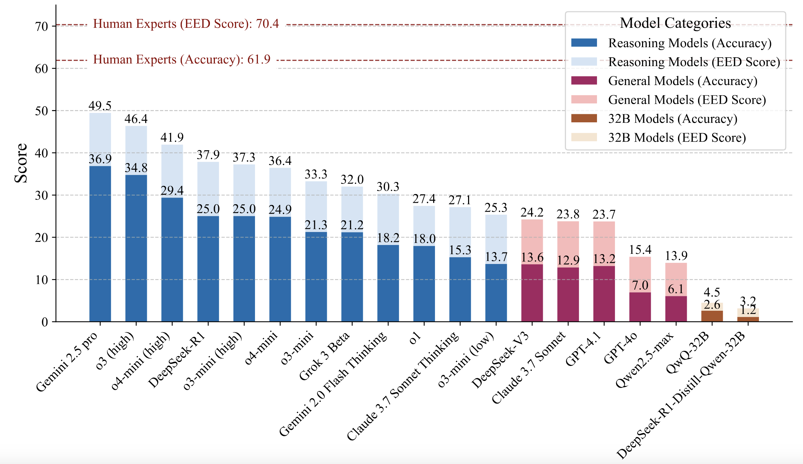
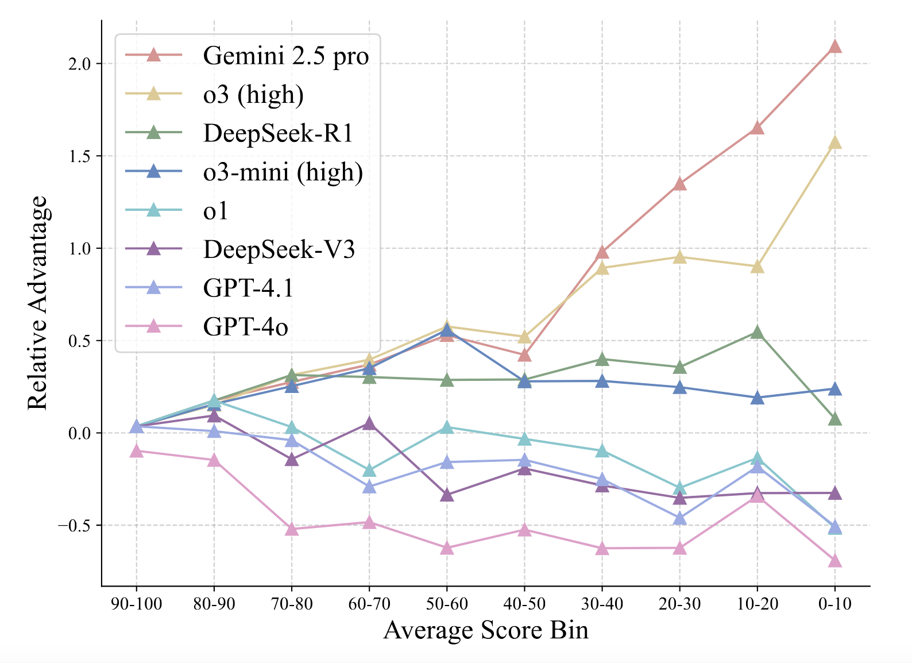

PHYBench is the first large-scale benchmark specifically designed to evaluate physical perception and robust reasoning capabilities in Large Language Models (LLMs).
With 500 meticulously curated physics problems spanning mechanics, electromagnetism, thermodynamics, optics, modern physics, and advanced physics, it challenges models to demonstrate:
Dedicated internal platform for peer review:

3-tier verification process:
Dual Metrics:
The EED Score evaluates the similarity between the model-generated answer and the ground truth by leveraging the concept of expression tree edit distance. The process involves the following steps:
Key Advantages:
The results of the evaluation are shown in the following figure:
Difficulty Handling: Comparing the advantage across problem difficulties, Gemini 2.5 Pro gains a pronounced edge on harder problems, followed by o3 (high).
We categorize the capabilities assessed by the PHYBench benchmark into two key dimensions: Physical Perception (PP) and Robust Reasoning (RR):
@misc{qiu2025phybenchholisticevaluationphysical,
title = {PHYBench: Holistic Evaluation of Physical Perception and Reasoning in Large Language Models},
author = {Shi Qiu and Shaoyang Guo and Zhuo-Yang Song and Yunbo Sun and Zeyu Cai and Jiashen Wei and Tianyu Luo and Yixuan Yin and Haoxu Zhang and Yi Hu and Chenyang Wang and Chencheng Tang and Haoling Chang and Qi Liu and Ziheng Zhou and Tianyu Zhang and Jingtian Zhang and Zhangyi Liu and Minghao Li and Yuku Zhang and Boxuan Jing and Xianqi Yin and Yutong Ren and Zizhuo Fu and Weike Wang and Xudong Tian and Anqi Lv and Laifu Man and Jianxiang Li and Feiyu Tao and Qihua Sun and Zhou Liang and Yushu Mu and Zhongxuan Li and Jing-Jun Zhang and Shutao Zhang and Xiaotian Li and Xingqi Xia and Jiawei Lin and Zheyu Shen and Jiahang Chen and Qiuhao Xiong and Binran Wang and Fengyuan Wang and Ziyang Ni and Bohan Zhang and Fan Cui and Changkun Shao and Qing-Hong Cao and Ming-xing Luo and Muhan Zhang and Hua Xing Zhu},
year = {2025},
eprint = {2504.16074},
archivePrefix= {arXiv},
primaryClass = {cs.CL},
url = {https://arxiv.org/abs/2504.16074}
}